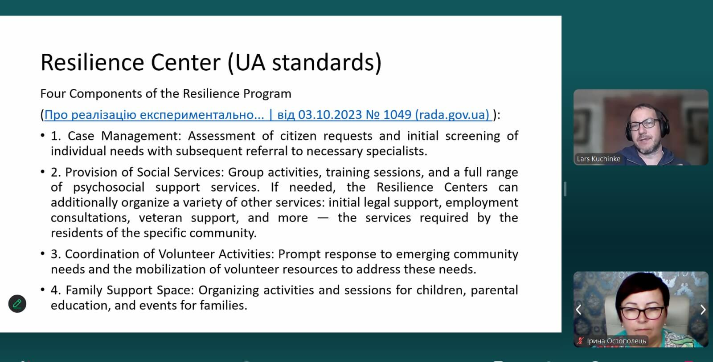
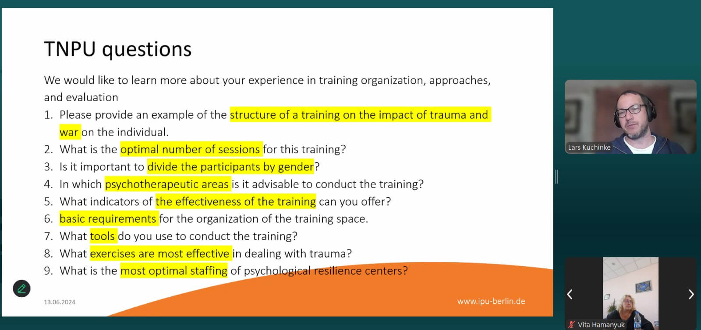
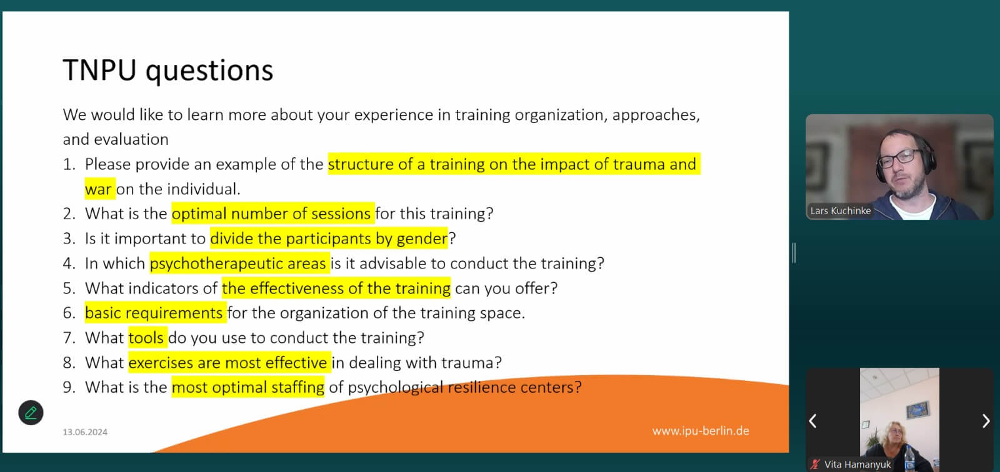
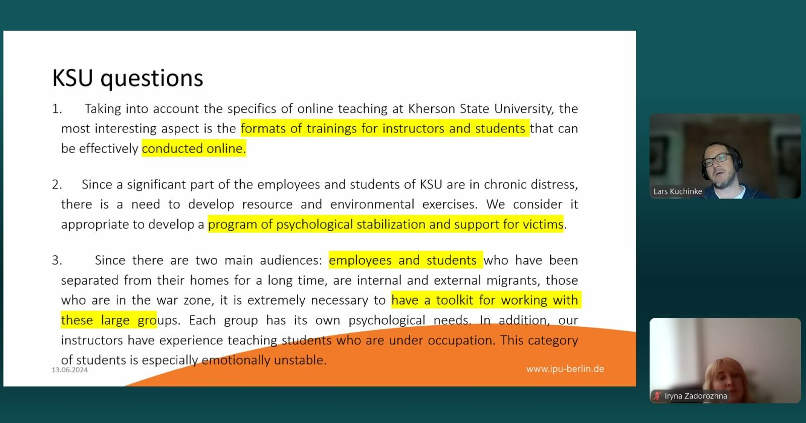

University Psychological Services and Support (June 13, 2024)
This past June 13th, 2024, a valuable webinar titled "University Psychological Services and Support" took place. Hosted by Dr. Lars Kulchinke (IPU Berlin), Dr. Laura Pirsko (Latvia), and Kristel Laan-Saarik (Estonia), the session focused on fostering psychological resilience and well-being within universities.

The webinar emphasized the importance of establishing comprehensive Center for Psychological Resilience and Wellbeing within universities. These centers offer a variety of support services to help students, faculty, and staff thrive.
Understanding differencies between Projet's Center for Psychological Resilience and Wellbeing and Resilience Centers that provided by Ministry of Social Policy was presented by Lars Kulchinke and supported by K. Bondar (Kryvyi Rih Pedagogical University (KSPU)
Key Takeaway: University Centers differ from those proposed by the Ministry of Social Policy. University centeres offer a different range of services, including research, educational programs, consultations, and practical assistance. Additionally, they focus on individual and institutional resilience development, and have greater autonomy due to a combination of funding sources.
Building Effective University Resilience Centers had a Collaborative Discussion that moderated by Dr. Lars Kulchinke
Olha Lovnys from Ternopil National University focus on this discussion delved into the structure and methods of operation for university resilience centers. Key questions addressed included:
- What services should these centers provide?
- How can they collaborate with state-run centers and other organizations?
- How will they be funded?
- What human resources and infrastructure are needed?
The webinar highlighted the distinction between resilience (the ability to adapt and cope with challenges) and mental health (overall emotional and psychological well-being). Project's centers will play a crucial role in promoting mental health and well-being across the university community. They achieve this by offering various support services and conducting research to build stronger, more resilient communities.
The webinar also featured discussions with representatives from various universities, highlighting their specific needs and interests:
Ternopil University: Focused on the structure of counseling services and the use of short-term interventions.
 

Kherson University: Emphasized the need for online counseling services to cater to a large student population.
Horlivka Institute: Discussed the potential use of diagnostic tools to support those seeking help from the center.
Melitopol University: Raised questions concerning the center's content and scope of work, as well as staff qualifications.

Latvian University (Laura Pirsko): Shared their planning process for a center on their new campus.
University of Tartu (Kristel Laan-Saarik): Underlined the importance of inclusive support services for students with special educational needs.
The "University Psychological Services and Support" webinar offered valuable insights into the diverse needs of universities when establishing resilience centers. The focus on short-term interventions, online counseling, and inclusive support highlights the evolving nature of university mental health services. Collaboration among universities and experts paves the way for knowledge sharing and best practices in building effective resilience centers for students, faculty, and staff.